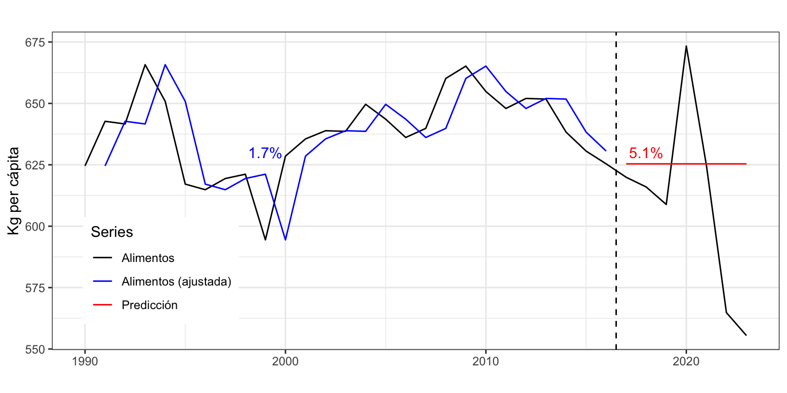
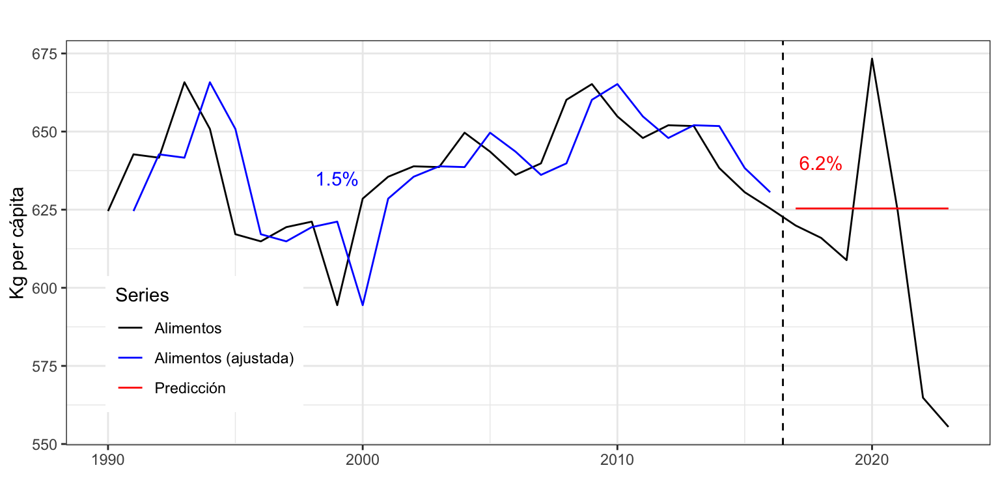
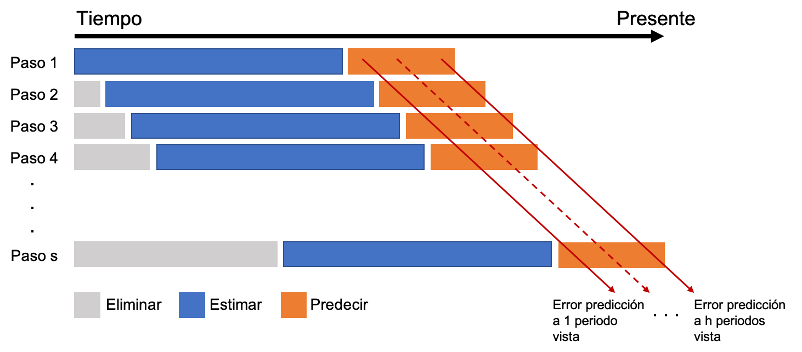
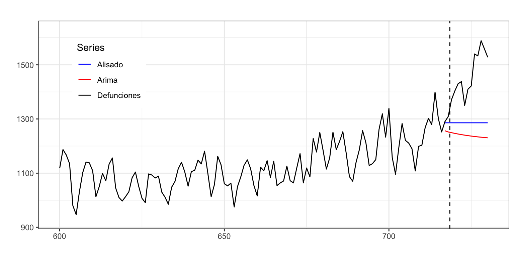

Iván Arribas (Depto. Análisis Económico. Universitat de València)
1 Introducción
Las medidas que hemos usado hasta ahora para valorar la calidad de los modelos son medidas de bondad de ajuste, es decir, medidas de la calidad de previsiones intramuestrales a un periodo vista: valoran en que medida los datos se ajustan a un modelo, pero no evalúan la precisión de la previsiones más allá del periodo muestral.
En este tema vamos a ver dos metodologías que podemos usar para valorar la precisión o calidad de las previsiones extramuestrales, que es realmente lo que nos interesa. Estas dos metodologías están relacionadas con los métodos de Conjunto de datos de entrenamiento y prueba (Training set/Test set) y Validación cruzada (Cross-validation), pero adaptadas a datos temporales.
2 Validación por conjunto de datos de entrenamiento y prueba
Vamos a estimar la calidad de las predicciones obteniendo medidas de error para previsiones extramuestrales a varios periodos vista usando la filosofía del conjunto de datos de entrenamiento y prueba.
Dividimos la serie temporal \(\{y_t\}_{t=1}^T\) en dos subseries. Los primeros datos \(\{y_t\}_{t=1}^{T_0}\), \(T_0 < T\), se usarán para estimar el modelo (conjunto de entrenamiento); y los últimos datos \(\{y_t\}_{t={T_0+1}}^{T}\) para calcular la precisión de las predicciones (conjunto de prueba).
Esta metodología, muy efectiva para datos de corte transversal, genera dos problemas cuando se aplica a series temporales: i) el error obtenido es una mezcla de errores de predicción a diferentes horizontes temporales, difícil de interpretar; ii) los resultados dependen tremendamente del punto de corte temporal seleccionado \(T_0\).
2.1 Ejemplo de aplicación a la serie consumo alimentarios en el hogar per cápita
En el tema pasado vimos como predecir con diferentes metodologías el consumo alimentario en hogar per cápita (kg per cápita) en España, serie estacionaria anual de 1990 a 2023. Vamos a evaluar la calidad de las predicciones centrándonos en el método Ingenuo I y el modelo Arima.
Método Ingenuo I
Vamos a reservar, por ejemplo, las últimas 7 observaciones de la serie Alimentos (años 2017 a 2023) y ajustar el modelo con las restantes observaciones (años 1990 a 2016). Después, usaremos este modelo para calcular las predicciones a 7 años vista y compararlas con los valores reales de la serie.
# Definimos las observaciones intra- y extramuestralesAlimentospcIntra <-subset(alimentospc, end =length(alimentospc) -7)AlimentospcExtra <-subset(alimentospc, start =length(alimentospc) -6)# Estimamos el modelo con todos los datos menos los 7 ultimos y# predecimos los 7 años que hemos quitado de la serie AlimentospcExtraPre <-naive(AlimentospcIntra, h =7)# Vemos la calidad del ajuste. Primero la predicción y luego los datos realesaccuracy(AlimentospcExtraPre, AlimentospcExtra)
ME RMSE MAE MPE MAPE MASE
Training set 0.03203846 14.33568 10.52073 -0.02070288 1.655404 1.000000
Test set -16.35414286 40.08671 30.05100 -3.05709480 5.091292 2.856361
ACF1 Theil's U
Training set -0.04888459 NA
Test set 0.29319433 1.10547
Atendiendo al MAPE se tiene que el error de previsión a un periodo vista en el periodo intramuestral de 1990 a 2016 es del 1.7%; mientras que el error de previsión a largo plazo en el periodo extramuestral de 2017 a 2023 es del 5.1%. Ademas, para el periodo extramuestral el error medio (ME) es negativo y muy elevado, un indicativo de que las previsiones están segadas (sobrestiman la realidad). En resumen, la calidad del modelo se deteriora muy rápidamente en cuanto nos salimos de las condiciones óptimas.
La Figura 1 puede ayudar a entender este proceso de validación:
La línea de puntos vertical separa el periodo muestral (1990-2016) usado para estimar el modelo, del periodo extramuestral (2017-2023) usado sólo para hacer las previsiones.
La serie Alimentación aparece como una línea sólida en negro, desde 1990 hasta 2023.
La previsión intramuestral (a un periodo vista) de la serie aparece como una línea azul.
La línea en rojo es la previsión extramuestral a largo plazo. Observa que excepto para 2020 todas las previsiones están por encima del valor real de la serie.
Al lado de cada previsión (intra y extramuestral) se ha indicado el error estimado (MAPE).
Claramente estos resultados dependen del punto de corte seleccionado. En este caso, al dejar fuera del periodo de estimación la pandemia y la posterior caída en el consumo de alimento en el hogar, las previsiones resultan muy desacertadas.

Figura 1: Precisión en la predicción de Alimentos por el método Ingenuo I
Importancia del punto de corte
Prueba a reservar las últimas 6 observaciones de la serie Alimentación y repite el análisis.
Modelo Arima
Ahora vamos a repetir el ejercicio, pero usando el modelo Arima estimado para la serie Alimentos en el tema previo, que recordemos era ARIMA(1, 0, 0) con constante e intervención. Como la intervención tiene lugar durante el periodo extramuestral, las variables ficticias valen cero durante todo el rango intramuestral y deben ser excluidas del análisis.
# Definimos las observaciones intra- y extramuestralesAlimentospcIntra <-subset(alimentospc, end =length(alimentospc) -7)AlimentospcExtra <-subset(alimentospc, start =length(alimentospc) -6)# Estimamos el modelo con todos los datos menos los 7 ultimos y# predecimos los 7 años que hemos quitado de la serie ariAlimentospcIntra <-Arima(AlimentospcIntra, order =c(1, 0, 0),include.constant =TRUE)ariAlimentospcIntraPre <-forecast(ariAlimentospcIntra, h =7)# Vemos la calidad del ajuste. Primero la predicción y luego los datos realesaccuracy(ariAlimentospcIntraPre, AlimentospcExtra)
ME RMSE MAE MPE MAPE MASE
Training set 0.3696849 12.79181 9.36163 0.016599 1.476634 0.889827
Test set -25.2641938 45.08782 36.16203 -4.533005 6.151504 3.437217
ACF1 Theil's U
Training set 0.09289229 NA
Test set 0.30152455 1.240974
Ahora el error de ajuste o previsión a un periodo vista intramuestral es del 1.5 %; mientras que el error de previsión extramuestral es del 6.2 %. De nuevo, las previsiones están segadas y sobrestiman la realidad (véase Figura 2).

Figura 2: Precisión en la predicción de Alimentos por el método Arima
En el tema previo vimos que Arima ajustaba mejor que el método Ingenuo I gracias a poder incorporar la intervención. En este ejercicio, al quedar el periodo de intervención fuera del periodo intramuestal de ajuste, ambos modelos tienen una calidad de ajuste muy similar (1.7 para Ingenuo I y 1.5 para Arima). Sin embargo, a la hora de predecir, el método más sencillo resulta algo mejor, con un error 1 p.p inferior al del método Arima.
En cualquier caso, la precisión obtenida es una media de errores desde un periodo vista hasta 7 periodos vista que no permite saber como crece el error conforme se incrementa el horizonte temporal de previsión. Por ejemplo, un error medio del 5% podría ser el resultado de errores inferiores al 2% para previsiones a uno o dos periodos vista junto con errores por encima del 10% para previsiones a 6 o 7 periodos vista.
3 Origen de predicción móvil
Veamos ahora una técnica, basada en el concepto de validación cruzada que permite obtener de forma individualizada los errores de previsión extramuestral a un periodo vista, a dos periodos vista, etc.
Supongamos que para estimar el modelo se necesita un mínimo de \(k\) observaciones y que se desea predecir hasta un horizonte temporal \(h\).
Seleccionamos las observaciones \(1,2,...,k\) para estimar el modelo y predecimos las observaciones desde \(k+1\) hasta \(k+h\). Tenemos, por tanto, \(h\) predicciones.
Calculamos el error de predicción para las predicciones desde \(k+1\) hasta \(k+h\). Tenemos \(h\) errores, el primero a un periodo vista, el segundo a dos periodos vista y el último a \(h\) perriodos vista.
Repetimos este proceso desplazando el número de observaciones seleccionadas para la estimación un periodo adelante. Es decir, ahora usamos las observaciones \(2,3,...,k+1\) para estimar el modelo, predecimos las observaciones desde \(k+2\) hasta \(k+1+h\) y calculamos el error de predicción.
Iteramos el proceso, desplazando cada vez las observaciones de la estimación un periodo adelante.
En general para \(i=0,1,...,T-k-h\), donde \(T\) es el número total de observaciones:
Seleccionamos las observaciones \(i+1,i+2,...,i+k\) para estimar el modelo.
Predecimos las observaciones desde \(i+k+1\) hasta \(i+k+h\).
Calculamos el error de predicción para las observaciones desde \(i+k+1\) hasta \(i+k+h\).
Para cada horizonte temporal de predicción se calcula la medida de error deseada.

Figura 3: Descripción del proceso de origen de predicción móvil
Este procedimiento se denomina origen de predicción móvil, en inglés rolling forecast origin o rolling windows.
Cuando se aplica esta metodología hay que tener en cuenta que los resultados pueden depender del número \(k\) de datos usados para la estimación del modelo.
3.1 Ejemplo de aplicación a la serie consumo alimentarios en el hogar per cápita
Vamos a aplicar la metodología previa a la serie anual de Alimentos. Asumimos que se precisan quince años para hacer una buena estimación, \(k=15\), y que el horizonte temporal es de cinco años, \(h = 5\). Volveremos a comparar los métodos Ingenuo I y Arima (sin considerar la intervención). Como medida de error de predicción vamos a considerar el MAPE.
Método Ingenuo I
k <-15# Minimo numero de datos para estimarh <-5# Horizonte de las predicicionesTT <-length(alimentospc) # Longitud series <- TT - k - h # Total de estimacionesmapeIng <-matrix(NA, s +1, h)for (i in0:s) { train.set <-subset(alimentospc, start = i +1, end = i + k) test.set <-subset(alimentospc, start = i + k +1, end = i + k + h) fcast <-naive(train.set, h = h) mapeIng[i +1,] <-100*abs(test.set - fcast$mean)/test.set}
La matriz mapeIng contiene los errores de previsión extramuestral, donde cada columna corresponde a un horizonte temporal de previsión diferente. Ahora vamos a calcular el error medio por columna.
Para evitar el efecto de los altos errores que se darán cuando el rango de previsión alcanza los últimos años, se puede calcular el error mediano en lugar del error medio. En este caso no hay una función directa en R y usaremos apply.
mapeIngMediana <-apply(mapeIng, MARGIN =2, FUN = median)round(mapeIngMediana, 2)
[1] 0.94 2.07 2.37 2.86 3.85
El error de previsión extramuestral (medio o mediano) crece gradualmente con el horizonte de previsión. Para el primer año el error de predicción se mantiene en un moderado 1%, para el segundo año de predicción el MAPE salta a más del 2% y para los restantes años sigue creciendo. Sin embargo, incluso para 5 años vista el error se mantiene razonablemente bajo. En todos los casos, el error mediano es menor que el medio al ser el primero robusto frente a años atípicos.
Modelo Arima
k <-15# Minimo numero de datos para estimarh <-5# Horizonte de las predicicionesTT <-length(alimentospc) # Longitud series <- TT - k - h # Total de estimacionesmapeAri <-matrix(NA, s +1, h)for (i in0:s) { train.set <-subset(alimentospc, start = i +1, end = i + k) test.set <-subset(alimentospc, start = i + k +1, end = i + k + h) fit <-Arima(train.set, order =c(1, 0, 0), include.constant =TRUE) fcast<-forecast(fit, h = h) mapeAri[i +1,] <-100*abs(test.set - fcast$mean)/test.set}mapeAriMedia <-colMeans(mapeAri)round(mapeAriMedia, 2)
[1] 1.31 2.44 2.63 3.48 4.29
mapeAriMediana <-apply(mapeAri, MARGIN =2, FUN = median)round(mapeAriMediana, 2)
[1] 1.39 2.54 2.76 3.20 3.03
Como en el caso previo, el error de previsión extramuestral (medio o mediano) crece gradualmente con el horizonte de previsión, desde el 1.3% para previsiones a un año vista hasta el 4% de media o 3% de mediana para previsiones a 5 años vista. En este caso la diferencia entre el error medio y mediano solo es notable para para previsiones a 5 años vista.
Comparación entre modelos
La mejor forma de comparar la calidad en las previciones extramuestrales de diferentes métodos es gráficamente. La Figura 4 muestra el error mediano obtenido con los métodos Ingenuo I y Arima según el horizonte temporal. Se ha elegido el error mediano para evitar el efecto de la pandemia.
El método Ingenuo I ofrece predicciones más precisas que el método Arima y es mucho más rápido de aplicar. Solo para predicciones a 5 años vista el método Arima supera en calidad de predicciones al método Ingenuo I
4 Aplicacion al número de defunciones diarias en España
Vamos a aplicar los dos procedimientos para la evaluación de las predicciones a la serie Defunciones, número de defunciones diarias en España desde el 1 de enero de 2022 hasta el 31 de diciembre de 2023, 730 datos. Esta serie está disponible en Ministerio de Ciencia, Innovación y Universidades.
En este caso, compararemos los métodos de Alisado y Arima, que ofrecían, según vimos en el tema 4 una calidad de ajuste muy similar. Recordemos que el modelo de Alisado que mejor ajustaba a la serie tenía error multiplicativo (model = "MNN") y que el mejor modelo Arima era ARIMA(2, 0, 0) con constante y sin ninguna intervención.
4.1 Validación por conjuntos de entrenamiento y prueba
Vamos a reservar en este caso las dos últimas semanas de la serie (14 días). Usaremos los modelos ya identificados para calcular las predicciones a 14 días vista y después compararlas con los valores reales de la serie.
# Definimos las observaciones intra- y extramuestralesDefuncionesIntra <-subset(defunciones, end =length(defunciones) -14)DefuncionesExtra <-subset(defunciones, start =length(defunciones) -13)# Estimamos el modelo de Alisado MNN y predecimosfit <-ets(DefuncionesIntra, model ="MNN")DefuncionesExtraPreAli <-forecast(fit, h =14)# Estimamos el modelo de Arima(2, 0 ,0) y predecimosfit <-Arima(DefuncionesIntra, order =c(2, 0 ,0), include.constant =TRUE)DefuncionesExtraPreAri <-forecast(fit, h =14)# Vemos la calidad del ajuste. Primero la predicción y luego los datos realesaccuracy(DefuncionesExtraPreAli, DefuncionesExtra)
ME RMSE MAE MPE MAPE MASE
Training set -0.5148402 65.32886 52.24719 -0.2849683 4.353032 0.9374338
Test set 154.9742064 180.11936 154.97421 10.3916378 10.391638 2.7805912
ACF1 Theil's U
Training set 0.2532441 NA
Test set 0.7167275 3.347972
ME RMSE MAE MPE MAPE MASE
Training set -0.4409052 65.95095 52.97001 -0.3297377 4.412686 0.9504029
Test set 200.0817499 223.15146 200.08175 13.5037939 13.503794 3.5899235
ACF1 Theil's U
Training set -0.0257479 NA
Test set 0.7260915 4.16499
Atendiendo al MAPE se tiene que el error de previsión intramuestral a un periodo vista es idéntico para ambos modelos, 4.4%. A la hora de comparar la precisión de la previsión extramuestral a largo plazo, el modelo de Alisado, con un error del 10.4%, muestra ser superior al modelo Arima, con un error del 13.5%. Es decir, aunque por calidad de ajuste ambos modelos son equivalentes, el método de Alisado predice en promedio mejor. Otra conclusión es que al pasar de ajuste a predicción, hay una pérdida de calidad muy notable. Si en lugar del MAPE usamos el RMSE o el MAE, obtenemos los mismos resultados.

Figura 5: Previsión extramuestral de Defunciones por los métodos de Alisado y Arima
La Figura 5 muestra que ambos métodos ofrecen previsiones muy inferiores al número real de defunciones. Esto es así, porque a partir del punto de corte las temperaturas fueron menores que las observadas previamente. La entrada del invierno en el periodo extramuestral y la caída de la temperatura ha provocado un aumento de las defunciones que ningún modelo ha capturado.
4.2 Origen de predicción móvil
Ahora aplicaremos la metodología de origen de predicción móvil a la serie de Defunciones. En este caso se asumirá que se precisan veinte semanas para hacer una buena estimación, \(k = 140\), y que el horizonte temporal es de 2 semanas, \(h = 14\). La siguiente rutina permite obtener el RMSE para previsiones con un horizonte temporal desde uno a 14 días. Como esta serie no presenta intervención, podemos calcular el error medio.
Código para cálculo del error deseado
Para Alimentos hemos visto el código necesario para calcular el MAPE por origen de predicción móvil. Las dos líneas clave del código son:
La primera línea obtiene el error porcentual absoluto de cada observación y la segunda calcula la media de estos errores.
Para calcular el RMSE es necesario adaptar estás dos líneas de código adecuadamente. Ahora la primera línea debe calcular el error cuadrático de cada observación y la segunda la raíz de la media de estos errores:
rmseAri[i + 1,] <- (test.set - fcast$mean)^2
rmseAri <- sqrt(colMeans(rmseAri))
En general, según el error que desees obtener, deberás modificar estas dos líneas de código como corresponda.
Además, si hay valores atípicos, puede ser conveniente calcular el error mediano en lugar del error medio.
k <-140# Minimo numero de datos para estimarh <-14# Horizonte de las predicicionesTT <-length(defunciones) # Longitud series <- TT - k - h # Total de estimacionesrmseAli <-matrix(NA, s +1, h)rmseAri <-matrix(NA, s +1, h)for (i in0:s) { train.set <-subset(defunciones, start = i +1, end = i + k) test.set <-subset(defunciones, start = i + k +1, end = i + k + h) fit <-ets(train.set, model ="MNN") fcast <-forecast(fit, h = h) rmseAli[i +1,] <- (test.set - fcast$mean)^2 fit <-Arima(train.set, order =c(2, 0, 0), include.constant =TRUE) fcast <-forecast(fit, h = h) rmseAri[i +1,] <- (test.set - fcast$mean)^2}rmseAli <-sqrt(colMeans(rmseAli))round(rmseAli, 2)
El error de previsión extramuestral crece día a día, desde algo menos de las 70 defunciones para previsiones a un día vista, hasta casi 100 defunciones a 14 días vista con el modelo de Alisado y las 134 defunciones para el método Arima. La Figura 6 muestra gráficamente la precisión en la previsiones.
El método Alisado ofrece las predicciones más precisas con independencia del horizonte temporal. Además, cuanto mayor es el horizonte temporal más se incrementa la diferencia en la calidad de las predicciones de ambos métodos.
5 Resumen de los comandos utilizados
Función
Paquete
Descripción
apply
base
Calcula el valor de una función aplicada a cada fila o columna de una matriz o base de datos
colMeans
base
Calcula el valor medio por columna de una matriz o base de datos